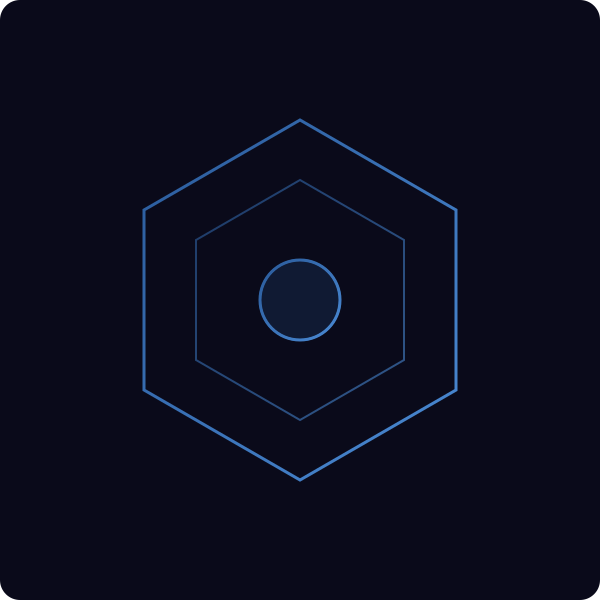
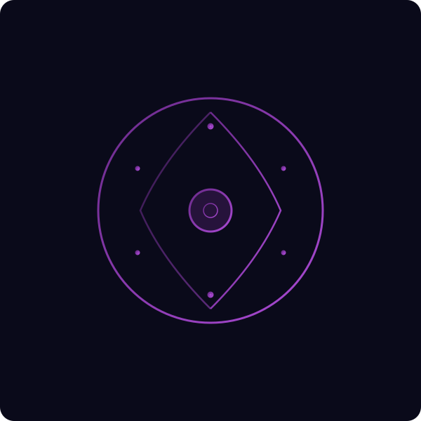

Destiny
From the atmospheric sci-fi worlds of Destiny comes the design philosophy of moment-to-moment gameplay feel, seamless netcode, and immersive world-building.
C++20 Game Engine
Built from scratch. Engineered for performance.
A custom game engine and multiplayer tech demo — with an independent backend platform that powers sessions, identity, and activities.

Ahamkara is a reusable C++20 game engine built from the ground up — no middleware, no shortcuts.
It provides a complete runtime host, SDK, rendering pipeline, animation system, physics and collision, audio, netcode with lag compensation, and a full toolchain. Designed for determinism, low latency, and developer control.

Wish is an independent backend and session platform that powers the live-service layer.
It owns identity, authentication, admission, sessions, activities, replication envelopes, administration, and backend integrations — all independent from the game engine, so any game can use it.
Built by one developer, inspired by the best in the industry.
From the atmospheric sci-fi worlds of Destiny comes the design philosophy of moment-to-moment gameplay feel, seamless netcode, and immersive world-building.
The gold standard for arcade FPS — tight gunplay, snappy movement mechanics, killstreaks, and the satisfying game feel that keeps players coming back.
The project draws from decades of engine architecture research — data-oriented design, deterministic networking, and systems-level engineering in modern C++20.